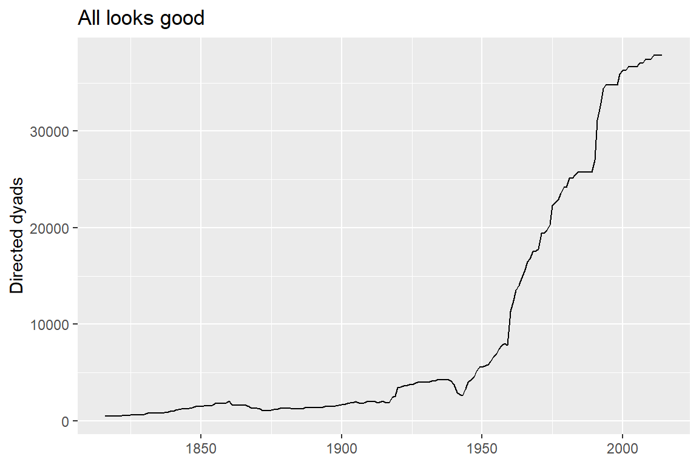
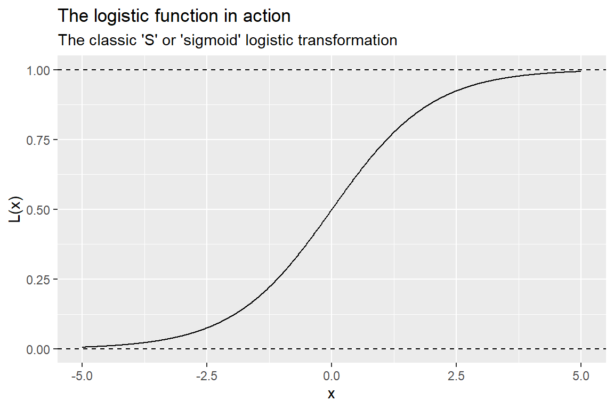
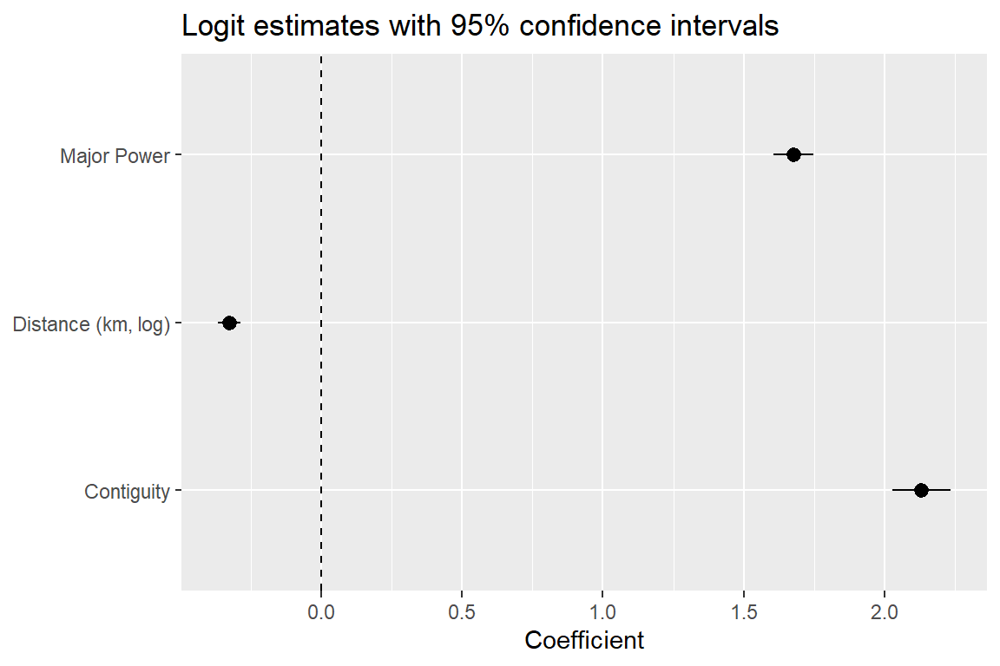
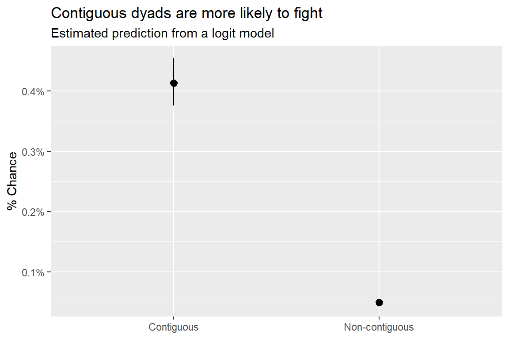
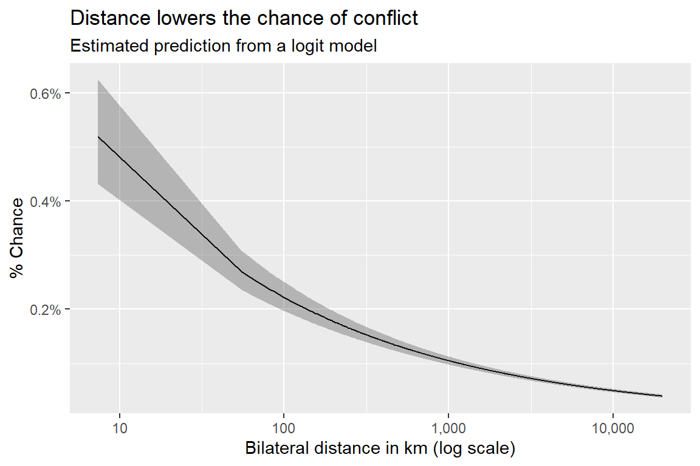
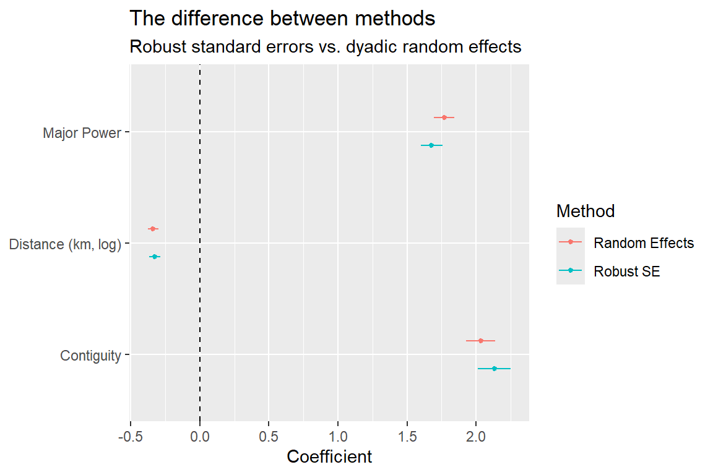

## open {tidyverse} and {peacesciencer}
library(tidyverse)
library(peacesciencer)
## make a directed-dyad-year dataset
create_dyadyears(
subset_years = 1816:2014
) -> ddy5 Dyadic Models of Conflict
Main ideas:
The dyadic approach dominates peace science research: Most conflict research focuses on country-pairs (dyads) over time rather than macro-level trends, largely due to professional incentives, researcher degrees of freedom, and the massive number of data points dyadic datasets provide.
Building dyadic datasets with
{peacesciencer}: The R package{peacesciencer}streamlines constructing valid directed or non-directed dyad-year datasets and merging in commonly used variables (contiguity, major power status, distance, MIDs, etc.).Logistic regression (logit) is the standard model for dyadic conflict: Because conflict onset is a binary, rare event, the logit model is used to map predictors to probabilities of conflict while respecting the 0–1 bounds of probability.
Handling statistical dependence in dyadic data: Since dyads are observed repeatedly over time, standard errors need adjustment either via cluster-robust standard errors or by modeling dyadic random effects directly in the specification.
5.1 Why do countries fight?
In the previous chapters, I spent a lot of time talking about how to measure war, and how to analyze macro-level trends in war propensity and severity over time. Despite how many chapters I dedicated to these subjects, the attention I paid to them isn’t proportionate to the attention peace scientists pay to them.
This seems odd to me, because I think understanding macro trends in international conflict has a good deal of practical relevance to people, and is intrinsically interesting. But the field of peace science treats these issues as niche. The bulk of the field’s focus, instead, lies in trying to understand conflict at the level of the dyad, or country-pair.
Because this is the main focus of peace research, best-practices and norms for what’s acceptable for studying conflict at the dyad-level are well-established, so much so that if you deviate from these best practices you have to do a lot of extra work to justify your unconventional choices.
Because dyadic conflict research is so ubiquitous, and a narrow range of methodological choices are the norm, in this chapter I want to spend some time explaining the dyadic approach and the statistical model most commonly applied in peace science research. I’ll then walk you through a simple example and the R code that implements it.
Mind you, because I can’t leave well enough alone, I’ll offer some of my own thoughts about how I might tweak existing approaches. And, I’ll test whether and how much this tweak alters conclusions from the replication analysis I’ll show you.
But, before I get to that, let me talk a bit about the dyadic approach to conflict research.
5.2 Studying dyads
If I randomly sampled a peace science study on international conflict from the past few decades, odds are pretty good that the authors of that study conducted their analysis of conflict initiation between pairs of countries, or dyads, over time.
I believe this kind of analysis dominates the field for two reasons. The first is that researchers really want to know why countries go to war. The second is that there’s a lot of untapped variation in dyadic conflict patterns left to explain. A rich set of theories are available to researchers to extend and modify to propose new predictions about which country dyads are at greatest risk of fighting. And new and improved measures get proposed all the time to time to test if old findings hold up with new data.
In short, dyadic analyses of conflict initiation have a lot of “researcher degrees of freedom,” which creates space for lots of different theories and measures to get tested. It also leaves plenty of room for disagreement.
Conversely, there’s much less space to make a novel contribution to research on global trends in conflict. Any budding peace scientist looking to publish their work has a much better chance of doing something novel with a dyadic analysis than one centered on global trends.
Think about it, the best conflict datasets available, such as the MIE dataset introduced previously, only cover about 200 years worth of data. That means an analysis of global conflict trends over time will at best have up to 200 data points (perhaps 12 times that value if doing monthly trends). Meanwhile, a directed-dyad-year dataset covering the same period has 1,836,630 data points. If your goal is to explain variation in a dataset with millions of data points, there’s always a chance of finding something new.
This isn’t necessarily a great, objective justification for focusing so much attention on dyadic studies. But peace scientists (and all scientists for that matter) are people who are subject to professional incentives and constraints. Often times, the research that gets done is the research that seems publishable. The more work that gets published in an area, the more publishable it seems, and then the more that kind of research gets published. On and on the cycle goes.
This is the idea of “path dependence,” and because of it, if you want to make a contribution to peace science, the best place to start is with a dyadic study. But how exactly do you do a dyadic analysis in peace science?
You need two things: (1) a dataset where each observation is a pair of countries in a given year and (2) a statistical model well-suited to taking a variety of different observed characteristics of country pairs and mapping them to probabilities of conflict initiation.
Because this kind of analysis is so common, tools are widely available for streamlining the process.
For a long time, many conflict scholars relied on tools such as EUGene for building their datasets. This tool provides a consistent way of defining the universe of cases you want to study, whether that’s individual countries or dyads over time. More recently, the political scientist Steve Miller made an R package called {peacesciencer} which makes the process of making and merging datasets much easier, and and possible to do directly in an R session on your computer (Miller 2022).
I mentioned this package in a previous chapter, and some of the code I’ve had you use already uses {peacesciencer} under the hood to perform various routines. In this chapter, I want to introduce the package more formally, and talk about its advantages. I personally use {peacesciencer} a lot in my own research because of these advantages.
While this package solves a lot of problems for doing peace science research, the most important problem it solves is making sure you have all the right units of observation in your dataset without duplicates or phantom cases, and without missing any relevant cases, too. If your unit of analysis in your data is fundamentally flawed, that’s bad news.
The second, somewhat less important problem the package solves (though it’s still quite important) is the drudgery of accessing the wide variety of commonly used datasets by peace scientists for doing their research. While {peacesciencer} doesn’t give you access to everything you could possibly want, it does provide access to many of the most important “go-tos.” It also provides access to an eclectic sample of other interesting and novel datasets that you might want to explore (for a person like me, looking through the package documentation feels very kid-in-a-candy-shop-esque).
I’ll talk more about different datasets that are available through the package in the coming chapters as I introduce different theoretical arguments for why countries go to war. For now, I just want to focus on the basic syntax the package provides for constructing a dataset with your desired universe of cases and then populating it with variables of interest.
Here’s some R code to get started. {peacesciencer} is meant to fit nicely into the tidyverse approach to R programming, so any time I use the package, I open the {tidyverse} as well (as I do in the below code). The next thing I do is construct a dataset with the universe of cases I want to study. I can do this with a wide variety of create_*() functions. You can check out the package documentation to see all the available options. Below, because I’m interested in doing a dyadic conflict analysis, I’m going to use create_dyadyears() which creates a dataset where each row is a unique country pair observed in a given year.
If you peek at the first few rows of the data, you can see what a dyad-year dataset looks like. create_dyadyears() returns a dataset with three columns: ccode1, ccode2, and year. The first is the Correlates of War (COW) country code for country 1 in the dyad, and the second is the COW code for country 2. The year column is the year a country pair is observed.
ddy |>
slice_head(n = 5)# A tibble: 5 × 3
ccode1 ccode2 year
<dbl> <dbl> <int>
1 2 20 1920
2 2 20 1921
3 2 20 1922
4 2 20 1923
5 2 20 1924Importantly, when create_dyadyears() constructs this dataset, it only returns valid country pairs. That means both countries must be recognized as members of the COW state system in the relevant year. To check that the dataset isn’t just hallucinating invalid dyads, I can run some code to quickly check that the number of dyads in a given year changes over time. If it were constant, that’d be a sign that the dataset is falsely including country pairs that could not possibly have existed at one point in time.
ddy |>
count(year) |>
ggplot() +
aes(year, n) +
geom_line() +
labs(
title = "All looks good",
x = NULL,
y = "Directed dyads"
)
Another important thing to note about the data create_dyadyears() produced is that it returned a directed-dyad-year dataset, which it does by default. Dyadic datasets usually take one of two forms: directed or non-directed. Which kind you use depends on what kind of question about conflict you want to answer.
A directed dataset is one where a country pair in a given year appears twice, but the order of countries 1 and 2 is flipped in the dyad’s second appearance. For example, as the output from the below code shows, the U.S. (COW code of 2) and Canada (COW code of 20) dyad appears twice in 1920, but the U.S. and Canada switch sides depending on which directed dyad is observed.
ddy |>
filter(ccode1 %in% c(2, 20), ccode2 %in% c(20, 2)) |>
slice_min(year, n = 1)# A tibble: 2 × 3
ccode1 ccode2 year
<dbl> <dbl> <int>
1 2 20 1920
2 20 2 1920This kind of dataset is called “directed” because it lets you analyze the direction of country behavior within a country pair. For example, say you were interested not just in understanding which country pairs are most prone to fighting, but which side in a country pair is most prone to initiating a conflict. In this case, you’d want to use a directed-dyad-year dataset.
To produce a non-directed-dyad-year dataset, all you need to do is indicate directed = FALSE when you run create_dyadyears():
create_dyadyears(
subset_years = 1816:2014,
directed = FALSE
) -> udyJoining with `by = join_by(ccode1, ccode2, year)`Now, when I run the same code I applied to the directed dataset to check whether a dyad appears twice on the non-directed dataset, I can clearly see that the U.S.-Canada dyad only appears once in 1920. In such a dataset the order of the countries (usually) doesn’t matter.
udy |>
filter(ccode1 %in% c(2, 20), ccode2 %in% c(20, 2)) |>
slice_min(year, n = 1)# A tibble: 1 × 3
ccode1 ccode2 year
<dbl> <dbl> <int>
1 2 20 1920I hope this method of constructing a dataset sounds easy, because the process of getting the universe of valid cases right without a tool like this is incredibly painful, and much more error prone, which I know from personal experience.
Of course, creating a dataset of cases is just the beginning. The next step is to start adding in variables. {peacesciencer}, thankfully, makes the process of getting common variables easy as well by providing you with a variety of add_*() functions that will add data from different commonly used datasets to your dataset.
Let’s construct a really simple one for analysis. Say I wanted to test how the factors used to construct the Braumoeller-Carson dyad measure of relevance introduced a couple chapters ago predict conflict onset between countries. Recall that this measure uses a statistical procedure convert information about dyadic contiguity, major power status of one of the countries in the pair, and bilateral distance into probabilities that countries can reach each other to fight. I can use {peacesciencer} to quickly construct a relevant dataset to confirm that these factors do, indeed, predict a higher chance of conflict. Because I’m only interested in the chance of conflict between countries and not the factors that lead one of the countries to initiate a conflict versus the other, I need to construct a non-directed-dyad-year dataset. Observe:
## start with non-directed-dyad-year base then pipe to add MIDs
create_dyadyears(
subset_years = 1816:2014,
directed = FALSE
) |>
## add COW MIDs data then pipe
add_cow_mids() |>
## add peace spells then pipe
add_spells() |>
## add contiguity data then pipe
add_contiguity() |>
## add major power data then pipe
add_cow_majors() |>
## add distance data then save as "dt"
add_cap_dist() -> dtAt the moment, {peacesciencer} doesn’t provide direct access to the MIE dataset, but it does offer access to the COW MIDs dataset by way of the function add_cow_mids(). As I discussed in a previous chapter, the COW MID dataset has some issues that were well-documented by the creators of the MIE dataset. But, for my purposes here, this dataset is good enough. {peacesciencer} also has functions that add contiguity data, major power status, and pair-wise distance between country capitals. Using a succession of relevant functions connected with the R pipe |> operator, I can string together a dataset that includes variables from all the relevant datasets I need to do my statistical analysis. If I use the glimpse() function, I can quickly take a look at what’s in the final data:
glimpse(dt)Rows: 918,315
Columns: 29
$ ccode1 <dbl> 2, 2, 2, 2, 2, 2, 2, 2, 2, 2, 2, 2, 2, 2, 2, 2, 2, 2, 2,…
$ ccode2 <dbl> 20, 20, 20, 20, 20, 20, 20, 20, 20, 20, 20, 20, 20, 20, …
$ year <dbl> 1920, 1921, 1922, 1923, 1924, 1925, 1926, 1927, 1928, 19…
$ dispnum <dbl> NA, NA, NA, NA, NA, NA, NA, NA, NA, NA, NA, NA, NA, NA, …
$ cowmidongoing <dbl> 0, 0, 0, 0, 0, 0, 0, 0, 0, 0, 0, 0, 0, 0, 0, 0, 0, 0, 0,…
$ cowmidonset <dbl> 0, 0, 0, 0, 0, 0, 0, 0, 0, 0, 0, 0, 0, 0, 0, 0, 0, 0, 0,…
$ sidea1 <dbl> NA, NA, NA, NA, NA, NA, NA, NA, NA, NA, NA, NA, NA, NA, …
$ sidea2 <dbl> NA, NA, NA, NA, NA, NA, NA, NA, NA, NA, NA, NA, NA, NA, …
$ fatality1 <dbl> NA, NA, NA, NA, NA, NA, NA, NA, NA, NA, NA, NA, NA, NA, …
$ fatality2 <dbl> NA, NA, NA, NA, NA, NA, NA, NA, NA, NA, NA, NA, NA, NA, …
$ fatalpre1 <dbl> NA, NA, NA, NA, NA, NA, NA, NA, NA, NA, NA, NA, NA, NA, …
$ fatalpre2 <dbl> NA, NA, NA, NA, NA, NA, NA, NA, NA, NA, NA, NA, NA, NA, …
$ hiact1 <dbl> NA, NA, NA, NA, NA, NA, NA, NA, NA, NA, NA, NA, NA, NA, …
$ hiact2 <dbl> NA, NA, NA, NA, NA, NA, NA, NA, NA, NA, NA, NA, NA, NA, …
$ hostlev1 <dbl> NA, NA, NA, NA, NA, NA, NA, NA, NA, NA, NA, NA, NA, NA, …
$ hostlev2 <dbl> NA, NA, NA, NA, NA, NA, NA, NA, NA, NA, NA, NA, NA, NA, …
$ orig1 <dbl> NA, NA, NA, NA, NA, NA, NA, NA, NA, NA, NA, NA, NA, NA, …
$ orig2 <dbl> NA, NA, NA, NA, NA, NA, NA, NA, NA, NA, NA, NA, NA, NA, …
$ fatality <dbl> NA, NA, NA, NA, NA, NA, NA, NA, NA, NA, NA, NA, NA, NA, …
$ hostlev <dbl> NA, NA, NA, NA, NA, NA, NA, NA, NA, NA, NA, NA, NA, NA, …
$ mindur <dbl> NA, NA, NA, NA, NA, NA, NA, NA, NA, NA, NA, NA, NA, NA, …
$ maxdur <dbl> NA, NA, NA, NA, NA, NA, NA, NA, NA, NA, NA, NA, NA, NA, …
$ recip <dbl> NA, NA, NA, NA, NA, NA, NA, NA, NA, NA, NA, NA, NA, NA, …
$ stmon <dbl> NA, NA, NA, NA, NA, NA, NA, NA, NA, NA, NA, NA, NA, NA, …
$ cowmidspell <dbl> 0, 1, 2, 3, 4, 5, 6, 7, 8, 9, 10, 11, 12, 13, 14, 15, 16…
$ conttype <dbl> 1, 1, 1, 1, 1, 1, 1, 1, 1, 1, 1, 1, 1, 1, 1, 1, 1, 1, 1,…
$ cowmaj1 <dbl> 1, 1, 1, 1, 1, 1, 1, 1, 1, 1, 1, 1, 1, 1, 1, 1, 1, 1, 1,…
$ cowmaj2 <dbl> 0, 0, 0, 0, 0, 0, 0, 0, 0, 0, 0, 0, 0, 0, 0, 0, 0, 0, 0,…
$ capdist <dbl> 734.8694, 734.8694, 734.8694, 734.8694, 734.8694, 734.86…The data has over 900,000 rows and 29 columns. It requires some extra cleaning to make the data more usable for a dyadic analysis, but let’s just take a second to appreciate how little code I needed to run to generate this. Just five years ago, it would have taken me hours to download each of the individual datasets I would have needed to make this dataset, and then merge them together, and check for errors. Using {peacesciencer}, in less than a minute I was able to write and run some code to accomplish the same goal.
But, as I said, I need to do a bit more cleaning, and I do only mean a bit. I actually have most of what I need already, but I need to make a binary measure of contiguity and binary measure to indicate if either country in a dyad is a major power. At the moment the relevant column for contiguity, conttype, is just a series of numerical codes corresponding to different levels of contiguity. Based on what I know from the package documentation, I want to code all cases with a code of 1 or higher as contiguous (this is the most inclusive measure of continuity, encompassing countries that border each other and also those separated by less than 400 miles of water). For major powers, at the moment the relevant information is spread across two different columns. One is an indicator for if country 1 is a major power, and the other is an indicator for if country 2 is a major power. I need a measure that equals 1 if either of these columns equals 1. Finally, for reasons I’ll talk about in just a second, I want to create a unique dyad numerical code. Thankfully, it only takes me a bit of code to make these changes:
dt |>
mutate(
## if conttype != 0, code as contiguous
cont = ifelse(conttype > 0, 1, 0),
## return the maximum major power indicator for each country
majpower = pmax(cowmaj1, cowmaj2),
## dyad ID
dyad = 1000 * ccode1 + ccode2
) -> dtNow, finally, to make my life easier I can use some additional {tidyverse} tools, like select(), to pair my data down just to the columns I need for my analysis:
dt |>
select(
dyad, ccode1, ccode2, year, cowmidonset, cowmidspell, cont, majpower, capdist
) -> dtNow, the data looks a bit more manageable:
dt |>
slice_head(n = 10)# A tibble: 10 × 9
dyad ccode1 ccode2 year cowmidonset cowmidspell cont majpower capdist
<dbl> <dbl> <dbl> <dbl> <dbl> <dbl> <dbl> <dbl> <dbl>
1 2020 2 20 1920 0 0 1 1 735.
2 2020 2 20 1921 0 1 1 1 735.
3 2020 2 20 1922 0 2 1 1 735.
4 2020 2 20 1923 0 3 1 1 735.
5 2020 2 20 1924 0 4 1 1 735.
6 2020 2 20 1925 0 5 1 1 735.
7 2020 2 20 1926 0 6 1 1 735.
8 2020 2 20 1927 0 7 1 1 735.
9 2020 2 20 1928 0 8 1 1 735.
10 2020 2 20 1929 0 9 1 1 735.This finalized dataset has the following columns:
dyad: a 4-6 digit numerical code unique to each dyad pair.ccode1: the COW code for country 1 in a dyad.ccode2: the COW code for country 2 in a dyad.year: the year a dyad exists.cowmidonset: a 0-1 indicator for whether a MID (militarized interstate dispute) began in a given year between a country pair.cowmidspell: a count of the number of years since the last ongoing MID between a pair of countries.cont: a 0-1 indicator for whether a dyad is contiguous.majpower: a 0-1 indicator for whether one of the countries in a dyad is a major power.capdist: the distance in kilometers between country capitals.
Alright, now that I have some data, now I need to model the chance of war, which is the subject of the next section.
5.3 Modeling dyadic data
If the dyadic dataset is the canvas for peace science research, the logistic regression model, also known as the logit model, is paint brush. If you’ve never heard of a regression model of any sort before, I highly recommend you check out some resources I written on regression models for my DPR 201 course.
While regression models, and statistical models in general, can seem intimidating to the uninitiated, they actually aren’t too complicated. They are tools for measuring how one or several different factors explain variation in an outcome of interest, and they often express this relationship as a linear function, sometimes with a non-linear transformation applied.
For example, a linear regression model specifies that an outcome variable is just a linear additive function of separate explanatory variables and random noise:
\[ \overbrace{y_i}^\text{outcome} = \underbrace{\beta_0 + \beta_1 x_i + \beta_2 z_i}_\text{linear function} + \overbrace{\epsilon_i}^\text{noise} \]
A logit model is just a variation on this idea. It has some of the same moving pieces, but also has some important differences that are tailored to solving a specific problem with data. Here’s what a logit model looks like:
\[ \Pr(y_i = 1) = \Lambda(\beta_0 + \beta_1 x_i + \beta_2 z_i) \]
The \(\Lambda()\) represents the logistic function, which when written explicitly, looks like this:
\[ \Lambda(x) = \frac{e^x}{e^x + 1} \]
The logistic function is where the logit model, or logistic regression model, gets its name. But what’s the point of this transformation? Why do peace scientists, with rare exceptions, use the logit model to study war?
The answer is simple: (1) conflict onset between a pair of countries is a binary variable that can only take the values 0 or 1, and (2) conflict between countries is rare enough that using a linear model will lead to erroneous linear predictions of the probability of conflict. The latter problem is especially important. Probabilities are restricted to the unit interval (a fancy way of saying they can’t be less than 0 or greater than 1). Linear regression models don’t abide by this limitation. Logit models, to the contrary, do.
Here’s why. The logistic transformation can take any continuous variable \(x\) and restrict it to the unit interval (between 0 and 1). Let me show you with some simple R code:
## create the logistic function and some x values
L <- function(x) exp(x) / (exp(x) + 1)
x <- seq(-5, 5, by = .01)
## plot how L(x) varies given x
ggplot() +
aes(x, L(x)) +
geom_line() +
geom_hline(
yintercept = 0:1,
lty = 2
) +
labs(
title = "The logistic function in action",
subtitle = "The classic 'S' or 'sigmoid' logistic transformation"
)
The above example shows what the logistic function does. It’s a sigmoid or s-shaped function that takes numerical data with any real numbered value and forces it to fit between 0 and 1. You can see why it would be used to model probabilities.
Let’s apply the logit model specifically to the problem of modeling dyadic conflict onset with the data I created above. I might write out the following formal model specification to represent what I plan to do with my statistical software:
\[ \Pr(\text{MID}_{dt} = 1) = \Lambda[\beta_0 + \beta_1 \text{contiguity}_{dt} + \beta_2 \text{major}_{dt} + \beta_3 \ln(\text{distance}_{dt}) + \tau(\text{spell}_{dt})] \]
The above model, in English, says that the probability that a militarized interstate dispute (MID) breaks out between a dyad \(d\) in year \(t\) is predicted by dyadic contiguity, whether one of the countries is a major power, and the natural log of the distance between them (distance is a skewed variable, so researchers commonly take the log of distance to shrink in big outliers). The \(\tau(\text{spell}_{dt})\) expression is shorthand for a cubic peace spell trend. This is a term that ends up in nearly all peace science logit models. It helps adjust for the the history of peace versus conflict between a pair of countries. A peace spell is just the number of years since the last ongoing conflict between a pair of countries.
Note that in the logit model, each of the predictors of interest is multiplied by a coefficient, denoted by \(\beta\). The direction and magnitude of this coefficient controls how much and in which direction the probability of conflict onset changes based on that predictor. The problem is that these coefficients are unknown. They need to be estimated. How?
All models require two things for estimation: (1) an objective function and (2) an estimator. An objective function provides a measure of how well different combinations of unknown parameters fit the data. An estimator is a rule for identifying the best set of parameters in light of the objective function.
For the logit model, the objective function is a likelihood function specified as:
\[ \sum_i\Lambda(\beta_0 + \beta_1 x_i)^{y_i} \times [1 - \Lambda(\beta_0 + \beta_1 x_i)]^{1 - y_i} \]
The best parameters are the ones that maximize this likelihood function. Thankfully, in practice, you don’t have to solve this maximization problem. Your software will do it for you.
Executing this model in R is quite easy to do. R is a statistical programming language after all, and this is a statistical model. Here’s simple code for estimating the regression model I specified earlier:
glm(
cowmidonset ~ cont + majpower + log(capdist) + poly(cowmidspell, 3),
data = dt,
family = binomial
) -> fitThe function glm() stands for generalized linear model. It can be used to estimate linear models, but also models such as logit that apply a non-linear transformation to the right-hand side of the model equation to force the data to better fit certain characteristics of the outcome.
The first thing I gave glm() was details about my regression model using R’s formula syntax. This lets me tell it what I want my outcome variable to be and which variables in my data I want to use to predict it.
I then tell glm() the dataset it needs to go looking in to find these variables by writing data = dt.
Finally, I specify family = binomial to indicate that I want to estimate a logit model. This syntax is actually shorthand for saying family = binomial(link = "logit").
If I want to take a look at the model results, I can use the summary() function on the model object called fit I created in the code above:
summary(fit)
Call:
glm(formula = cowmidonset ~ cont + majpower + log(capdist) +
poly(cowmidspell, 3), family = binomial, data = dt)
Deviance Residuals:
Min 1Q Median 3Q Max
-1.0670 -0.0663 -0.0412 -0.0299 6.0427
Coefficients:
Estimate Std. Error z value Pr(>|z|)
(Intercept) -4.22455 0.17067 -24.753 <2e-16 ***
cont 2.13119 0.05247 40.620 <2e-16 ***
majpower 1.67629 0.03652 45.897 <2e-16 ***
log(capdist) -0.32679 0.01991 -16.410 <2e-16 ***
poly(cowmidspell, 3)1 -633.63571 31.81307 -19.917 <2e-16 ***
poly(cowmidspell, 3)2 99.72789 52.44293 1.902 0.0572 .
poly(cowmidspell, 3)3 -733.55661 39.22941 -18.699 <2e-16 ***
---
Signif. codes: 0 '***' 0.001 '**' 0.01 '*' 0.05 '.' 0.1 ' ' 1
(Dispersion parameter for binomial family taken to be 1)
Null deviance: 45541 on 918314 degrees of freedom
Residual deviance: 33636 on 918308 degrees of freedom
AIC: 33650
Number of Fisher Scoring iterations: 10There’s a lot of info that this function returns, but most of the action is under the Coefficients: heading. This is a table that, for each explanatory variable in the model, reports the coefficient, standard error, test statistic (known as a z-statistic), and p-value. The coefficient is a measure of how much the chance of conflict changes based on a change in the explanatory variable. The remaining values capture statistical uncertainty (the role of random noise) in generating these coefficients. If the p-value is less than 0.05, this means that the coefficient value is statistically significant. That is, the null hypothesis that the coefficient should be zero can be rejected. Looking at the results above, it looks like contiguity, major power status, and distance all have a statistically significant relationship with the probability of a MID between a pair of countries. Based on what you know about the Braumoeller-Carson measure of opportunities for war, these values make sense. The coefficients for contiguity and major power status are positive, meaning contiguous dyads and those where at least one is a major power have a higher probability of fighting. The coefficient for the log of distance is negative, meaning dyads where countries are farther apart have a lower probability of fighting.
These results can be more accessibly summarized in a coefficient plot, as I do in the below code. Coefficient plots summarize model output by reporting the coefficient as a point and summarizing statistical significance using 95% confidence intervals, which have the appropriate coverage for determining if an estimate is statistically different from some value of interest (in this case, zero). The below code will make a coefficient plot specifically for the three factors of interest: contiguity, major power status, and distance.
fit |>
broom::tidy() |>
mutate(
lower = estimate - 1.96 * std.error,
upper = estimate + 1.96 * std.error
) |>
slice(2:4) |>
ggplot() +
aes(estimate, term, xmin = lower, xmax = upper) +
geom_pointrange() +
geom_vline(
xintercept = 0,
lty = 2
) +
scale_y_discrete(
labels = c("Contiguity", "Distance (km, log)", "Major Power")
) +
labs(
title = "Logit estimates with 95% confidence intervals",
x = "Coefficient",
y = NULL
)
Beyond noting statistical significance and the direction of relationships, the raw output from logit models isn’t very intuitive to understand. Because of the nature of the logistic transformation, the coefficient for a given predictor represents the change in the logged odds of the outcome taking the value 1 per a unit change in the predictor. I don’t know about you, but I don’t really know what that means in practical terms.
For this reason, it’s often recommended that you report simulated predicted values from logit models rather than only report the raw model coefficients. This task is easy to do in R as well, with the help of the {ggeffects} package. Check out the below code. It uses the ggpredict() function from the {ggeffects} package to get predicted values for MID onset from the logit model based on contiguity while keeping the other model factors fixed at their mean values (this is the default. You can change this if you want.). These values can then be plotted however you want using ggplot().
The below code shows the conditional probabilities of conflict based on contiguity. Note that when I show two or more conditional probabilities from a logit model, I use 84% CIs instead of 95% CIs. As I discussed in a previous chapter, I can use the overlap or non-overlap of 84% CIs to judge statistical significance, just as I can use 95% CIs to judge statistical significance based on the overlap or non-overlap of these intervals with zero.
## open {ggeffects}
library(ggeffects)
## get predictions
ggpredict(fit, terms = "cont", ci_level = .84) |>
as_tibble() -> preds
## plot results
preds |>
mutate(
x = ifelse(x == 1, "Contiguous", "Non-contiguous")
) |>
ggplot() +
aes(x, predicted, ymin = conf.low, ymax = conf.high) +
geom_pointrange() +
scale_y_continuous(
labels = scales::percent
) +
labs(
title = "Contiguous dyads are more likely to fight",
subtitle = "Estimated prediction from a logit model",
x = NULL,
y = "% Chance"
)
You can do a similar process for each of the other covariates, but depending on whether the predictor is binary or continuous, the execution will be a bit different. For example, here’s how this process would look for distance, which is continuous:
ggpredict(fit, "capdist", 0.84) |>
as_tibble() |>
ggplot() +
aes(x, predicted, ymin = conf.low, ymax = conf.high) +
geom_line() +
geom_ribbon(
alpha = 0.3
) +
scale_x_log10(
labels = scales::comma
) +
scale_y_continuous(
labels = scales::percent
) +
labs(
title = "Distance lowers the chance of conflict",
subtitle = "Estimated prediction from a logit model",
x = "Bilateral distance in km (log scale)",
y = "% Chance"
)
All in all, the data offers some good confirmation of the logic beyond the Braumoeller-Carson measure of conflict opportunities. The countries most prone to “rolling the iron dice,” to resurrect a metaphor I introduced in previous chapters, are those that are neighbors, major powers, or those that are relatively close geographically.
5.4 Some additional recommendations
The model results shown above nearly conform to the best practices in peace science research, but one big factor remains: robust inference. Logit models don’t on their own account for the fact that dyads interact over time, which means one dyad in a given year is also correlated with the same dyad in other years. Controlling for peace spells, as I did in the model, helps a bit, but not perfectly, because the problem has to do with the uncertainty created by repeated interactions over time.
There are two ways around this problem. The first is to simply estimate standard errors that adjust for this, known as cluster-robust standard errors. The second is to model this feature of the data directly in your logit specification. My preference is the second, but the first is more the norm, mainly because it’s easier to do.
Before I tell you how to implement each approach, let me quickly explain why I like the second one better.
As I teach my 201 students, an assumption like independence of observations (the idea that no two or more data points influence each other) only matters when you’re doing statistical inference for linear regression models. Independence has no bearing on the linear model estimates themselves. This isn’t the case with many generalized linear models which make stronger assumptions of the data. In the case of logit models, a violation of independence (e.g., the fact that one dyad in one year is correlated with this same dyad in other years) means that your model estimates (coefficients) will be biased in addition to your standard errors. Therefore, taking your model coefficients as is and then applying robust standard errors after the fact only fixes half of the problem.
Modeling dependence directly fixes both problems at once. Importantly, using this approach doesn’t guarantee that everything is fine. You still can get biased results if you have a poorly specified model. But in practice I think it offers better precision in model estimates and reduces bias in your model coefficients if done well.
Because this is just my preference, let me show you how to implement both approaches. As you’ll see, in both cases I need to use the dyad identifier column I added to the data to indicate which observations should be treated as clustered (dependent).
First, robust standard errors:
## open {lmtest} and {sandwich}
library(lmtest)Loading required package: zoo
Attaching package: 'zoo'The following objects are masked from 'package:base':
as.Date, as.Date.numericlibrary(sandwich)
## rerun coefficient test with robust standard errors clustered by dyad
fit |>
coeftest(
vcov. = vcovHC(fit, clusters = dt$dyad)
) |>
broom::tidy() |>
mutate(
lower = estimate - 1.96 * std.error,
upper = estimate + 1.96 * std.error,
Method = "Robust SE"
) |>
slice(2:4) -> app1Second, here’s how to model dyadic dependence directly. To implement this approach, I need to use the gam() function from the {mgcv} package, and then include s(dyad, bs = "re") in the formula. This tells gam() that I want to include dyadic random effects in the model. These let me account for between dyad differences, and within dyad dependence simultaneously, while also allowing me to make partial comparisons between dyads for my other model predictors. When I use this approach, I can use the standard errors directly produced from the model:
library(mgcv)Warning: package 'mgcv' was built under R version 4.2.3Loading required package: nlme
Attaching package: 'nlme'The following object is masked from 'package:dplyr':
collapseThis is mgcv 1.9-0. For overview type 'help("mgcv-package")'.gam(
cowmidonset ~ cont + majpower + log(capdist) + poly(cowmidspell, 3) +
s(dyad, bs = "re"),
data = dt,
family = binomial
) -> new_fit
new_fit |>
coeftest() |>
broom::tidy() |>
mutate(
lower = estimate - 1.96 * std.error,
upper = estimate + 1.96 * std.error,
Method = "Random Effects"
) |>
slice(2:4) -> app2Once I have the results I can compare them:
bind_rows(app1, app2) |>
ggplot() +
aes(estimate, term, xmin = lower, xmax = upper) +
geom_pointrange(
aes(color = Method),
position = position_dodge(-.5),
size = .1
) +
geom_vline(
xintercept = 0, lty = 2
) +
scale_y_discrete(
labels = c(
"Contiguity",
"Distance (km, log)",
"Major Power"
)
) +
labs(
title = "The difference between methods",
subtitle = "Robust standard errors vs. dyadic random effects",
x = "Coefficient",
y = NULL
)Warning: `position_dodge()` requires non-overlapping x intervals.
The differences aren’t substantial, but they do exist, and depending on what all you include in your model, differences can be potentially more substantial. I’ve personally seen variables shift from being statistically significant to not (and vice versa), and some variable estimates shift direction. Going forward, I’ll primarily use the robust standard error approach since this is more the norm, but I wanted to make sure you knew about a different option that I think offers some important advantages (useful to keep in mind for a final project).
5.5 Summary
I covered a lot of ground in this chapter. For that I’m sorry. To do peace science requires understanding some more -than-basic statistical tools. But the good news is that few peace science studies deviate very far from the methods I used here. You can take what you learn from here and apply it general to nearly any international conflict study you can conceive.
However, while the methods change very little from one study to the next, as you’ll see in the coming chapters when I introduce different theoretical arguments for why countries fight, the real art of peace science is measuring sometimes difficult to measure concepts so that you can plug them into a statistical model like logit. This requires making difficult judgment calls and an ability to write a compelling argument that convinces other researchers that your theoretical and empirical contribution to the field is sound and worth publishing.